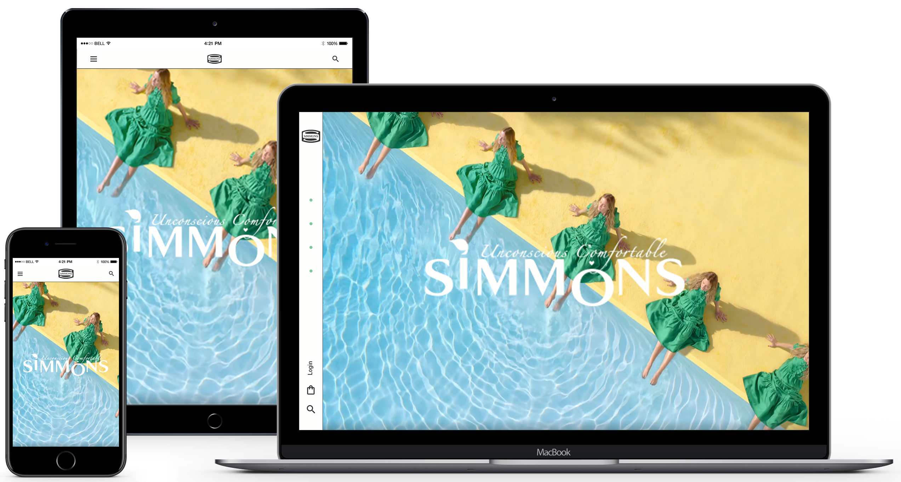

최근 시몬스에서 주최한 2022 브랜드 캠페인 '오들리 새티스파잉 비디오(Oddly Satisfying Video)' 영상은 멘탈 헬스(Mental Health)에 영감을 받아 '힐링'과 '치유'의 메시지 전달 하는것을 목적으로 하고 있습니다. 이러한 캠페인의 취지에 맞게 웹페이지를 구성 하였고 시몬스의 또 다른 마케팅인 '침대가 없는'이라는 컨셉에 맞춰 침대를 최대한 배제하여 리뉴얼을 진행 하였습니다.
SIMMONS
시몬스 리뉴얼
구분 :
제작 :
인원 :
기간 :
사용 :
시몬스 리뉴얼
최근 시몬스에서 주최한 2022 브랜드 캠페인 '오들리 새티스파잉 비디오(Oddly Satisfying Video)' 영상은 멘탈 헬스(Mental Health)에 영감을 받아 '힐링'과 '치유'의 메시지 전달 하는것을 목적으로 하고 있습니다. 이러한 캠페인의 취지에 맞게 웹페이지를 구성 하였고 시몬스의 또 다른 마케팅인 '침대가 없는'이라는 컨셉에 맞춰 침대를 최대한 배제하여 리뉴얼을 진행 하였습니다.
구분 :
제작 :
인원 :
기간 :
사용 :
COLOR
'힐링' 이라는 컨셉에 맞춰 사용자에게 편안함을 주는 그린 계열의 색상을 포인트 컬러로 선정 하였습니다.
FONT
CODING
- 미디어쿼리를 사용하여 반응형 웹페이지로 만들어 화면의 크기에 따라 자연스럽게 변형이 될 수 있도록 작업하였습니다.
- 가로페이지로 제작하여 특색있는 페이지를 제작하였습니다